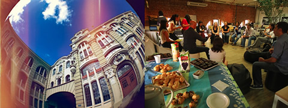

Crie aplicações web com node.js
Neste workshop de curta duração você vai aprender rapidamente a desenvolver aplicações utilizando node.js, uma plataforma para aplicações de rede altamente escaláveis. Vamos abordar desde o básico até conceitos avançados como streams, bibliotecas de controle de fluxo, e criação de servers utilizando HTTP e websockets de maneira totalmente prática.
Não é necessário ter experiência prévia com node.js, mas bons conhecimentos de javascript são necessários. Se você quer entender melhor os fundamentos de programação assíncrona e como utilizá-los para criar aplicações web mais eficientes e real-time, este curso é para você.
O workshop é presencial com duração de aproximadamente 2h30. A turma tem até 30 alunos, num espaço muito legal, amplo e confortável com guloseimas e café à vontade!
Conteúdo
-
Por que Node.js?
- Javascript no servidor
- A engine V8
- Node vs outras plataformas
- O event loop
- I/O assíncrono
- Concorrência e escalabilidade
-
Sistema de módulos
- Introdução ao NPM
- Instalando módulos e dependências
- Organização de código
- Criando e publicando módulos
-
Callbacks, Eventos & Streams
- Assincronismo
- Event Emitters
- Streams
- API e módulos nativos
- Controle de fluxo
- Performance
-
Construindo uma aplicação
- HTTP
- Express.js
- Routes
- Exibindo templates
- WebSockets
- Socket.io
- Eventos em tempo real
- Backbone e outros frameworks
- Bancos de dados & NoSQL
-
Build & Deploy
- Preparando assets com Flour
- Grunt
- Deploy SaaS e VPS
-
+ Guest talk
Nosso convidado especial vai apresentar aplicações da tecnologia no mercado e sua experiência com a plataforma em um ambiente de produção.
É para você
O conteúdo deste workshop abrange do básico ao avançado da tecnologia por trás do Node.js.
É imprescindível ter conhecimentos de programação e em especial o básico da linguagem Javascript. Aconselhamos a leitura do JavaScript Garden para reforçar seus conhecimentos.
Você precisa apenas ir munido do seu entusiasmo, mas se preferir trazer seu laptop ou tablet será bem-vindo. Teremos wi-fi e conexão de 100mbps no local.
Instrutores

Jean Carlo Emer
Artesão da internet, desenvolvedor na Codeminer42 e cientista da computação pela UFRGS. Adora aprender uma linguagem diferente, seja as do tipo que solucionam problemas aritméticos e lógicos, marcam, estilizam ou geram outras.

Data & Local
O workshop acontece no dia 21 de Agosto, véspera do BrazilJS, no Nós Coworking, um espaço de trabalho colaborativo localizado junto ao Shopping Total:

Nós Coworking
Shopping Total - Av. Cristóvão Colombo, 545
Prédio 02 - 5˚ andar | Alameda dos Escritores
Bairro Floresta | Porto Alegre - RS